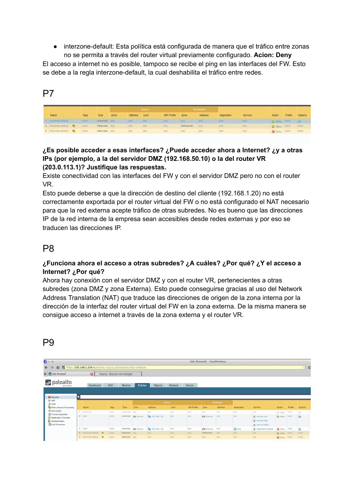
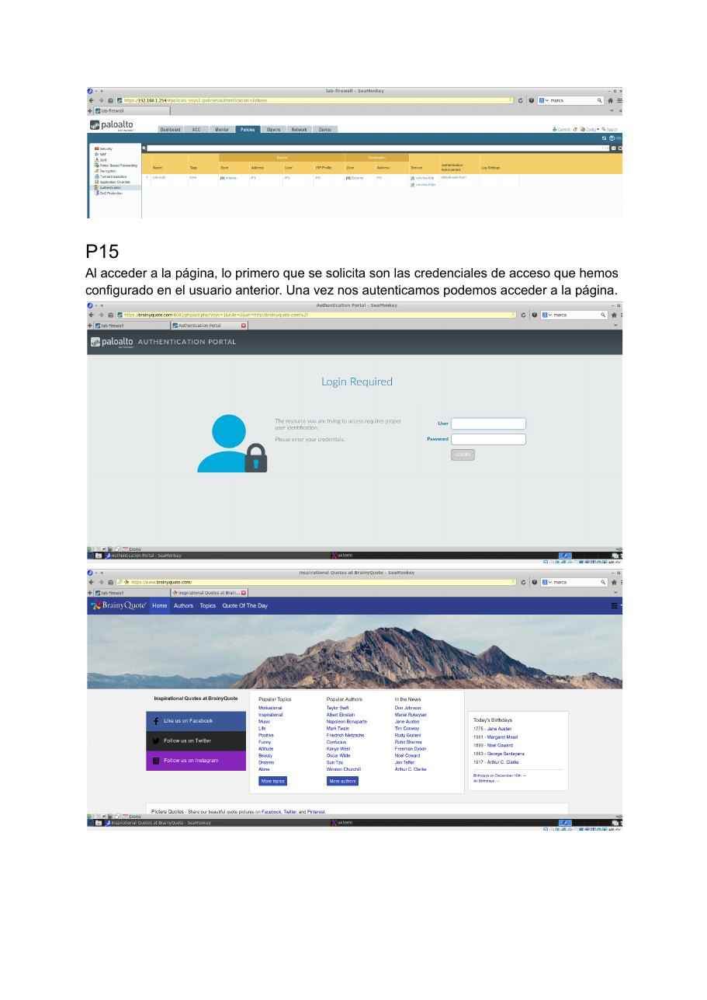
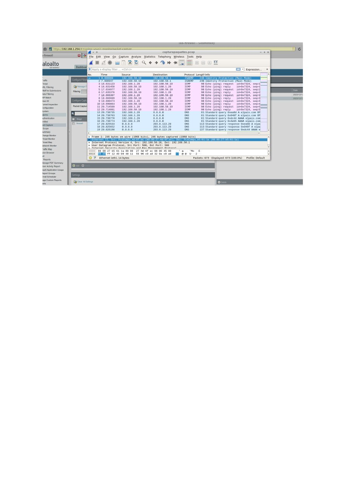

← Volver a 4º de Grado
Ciberseguridad · 2023–2024 · Práctica en pareja
Configuración y validación de un firewall Palo Alto
Práctica de segmentación y control de tráfico en un firewall virtual: interfaces y zonas, routing, NAT, políticas de seguridad, autenticación, monitorización, alarmas, reporting y captura de paquetes.
FWPolicy · NATSecurity lab
Puntos destacados
Configurar, limitar y observar el tráfico.
3 zonassegmentación de red interna, DMZ y red externa
Routingrouter virtual y ruta por defecto para tráfico hacia Internet
NATtraducción de origen para permitir conectividad sin exponer direcciones internas
Policiesreglas interzona por servicio, origen, destino y acción
Authacceso web condicionado a credenciales de usuario
Monitorlogs, alarmas, informes y packet capture para validar el comportamiento
Secuencia
De la topología a la evidencia.
01
Interfaces y zonas
Asociación de interfaces a redes, configuración de direccionamiento y segmentación lógica.
02
Routing + NAT
Ruta por defecto y traducción de origen para acceso controlado a redes externas e Internet.
03
Políticas
Reglas de allow/deny para HTTP, HTTPS, DNS, ICMP, DMZ y servicios concretos.
04
Observabilidad
Validación mediante logs del firewall, reportes, alertas y análisis final de tráfico con Wireshark.
Evidencias
Configuración y validación.



Stack y conceptos
Competencias aplicadas
Palo Alto NetworksFirewallSecurity PoliciesNATRoutingDMZHTTP/HTTPSDNSICMPFTPAuthenticationLogsWireshark
Entregable seleccionado